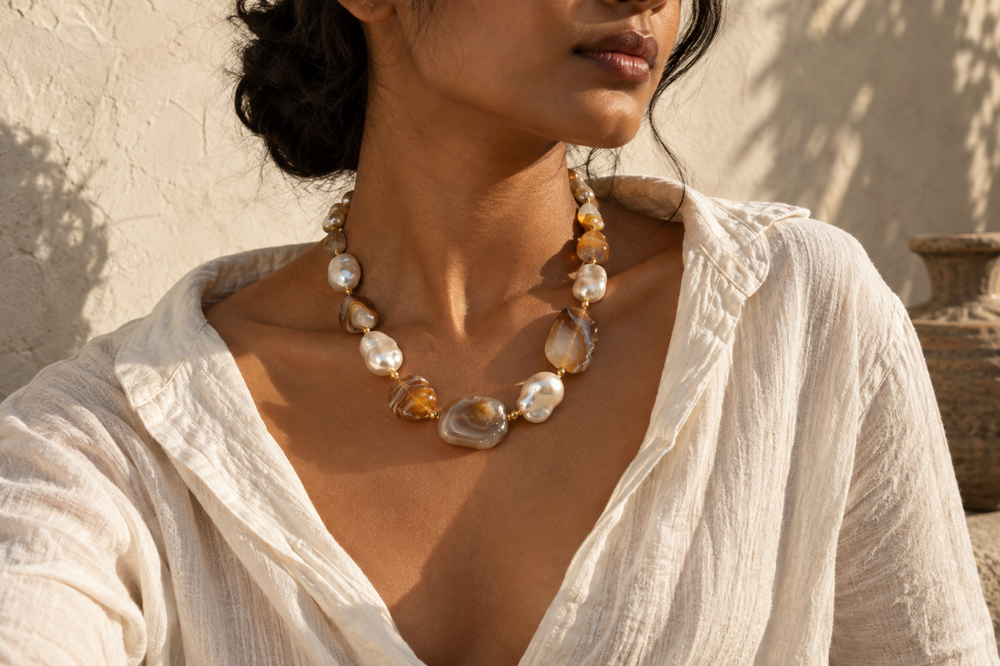
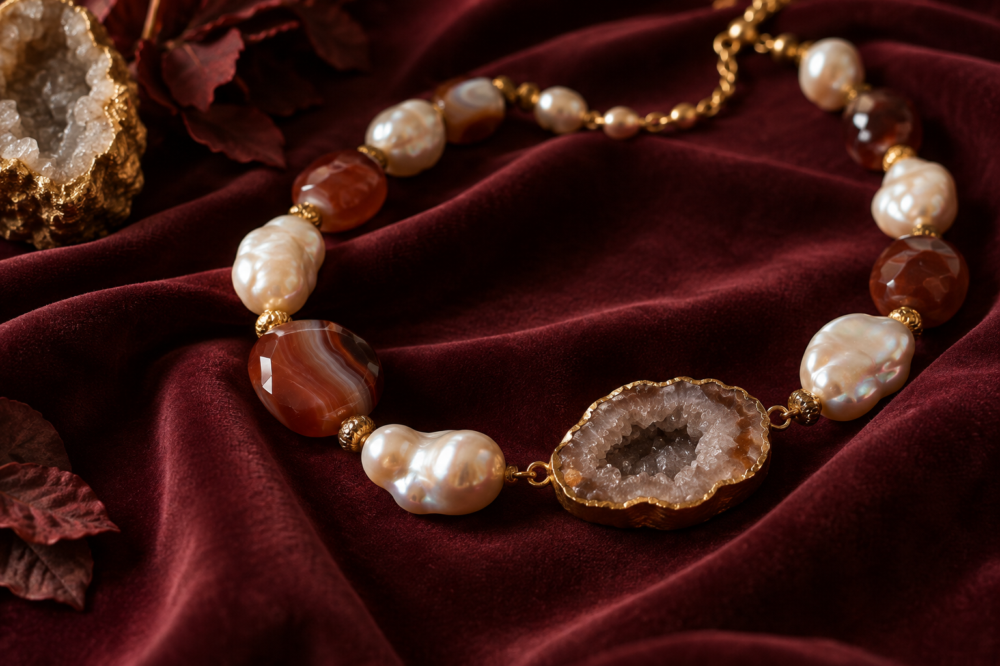

EXPLORE ALL PIECESHandmade gemstone jewellery, one piece at a time.
THE WATER LILY WAY
One necklace.
One person.
Never another.
We make one handmade necklace at a time. Not one style, run a hundred times. One one-of-a-kind necklace, and then it’s gone.
Every piece begins with natural gemstones we’ve handled ourselves. We design it, hand-make it, and when it finds its person, it retires permanently.
DISCOVER OUR PROCESSNature never repeats itself.
NEITHER DO WE.
Explore natural pearl, agate and geode — the starting points for our one-of-a-kind necklaces.
Each necklace is a single creation. Once it finds its person, it becomes part of their story alone.
THE MAKING
It starts with
the stone.
Not the sketch.
We choose natural gemstones with something worth building around, then design to the material instead of forcing it into a template.
Every necklace is strung, set, and finished by hand in our Pune studio. No two beads sit the same way twice, because no two stones are the same.
That’s not a limitation. It’s the reason.
FEWER THINGS. MORE MEANING.
Something you’d notice
if it went missing.
Not just because of what it cost.
Because there won’t be another one like it.
WATER LILY ATELIER · PUNE
A little closer
to the stones.
Water Lily Atelier started with one person’s attention to stone: its colour, the way light sits inside agate, the difference between a necklace that looks made and one that looks found.
That instinct is still the whole operating principle. We haven’t scaled the idea. We’ve just kept doing it properly.
BY APPOINTMENT ONLY
1 Modibaug, Shivaji NagarPune — 411016, India
Visits are by prior appointment. Booking details will be available soon.
VIEW LOCATION